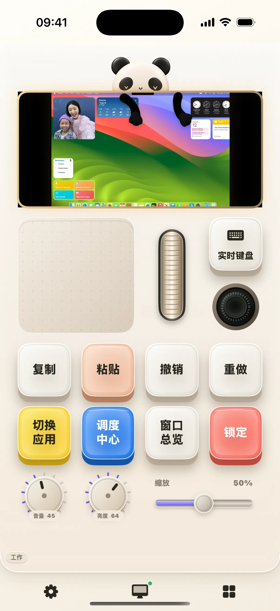
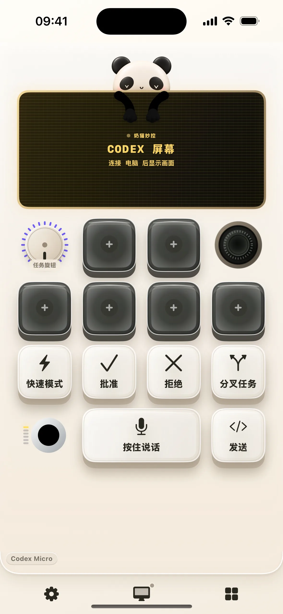
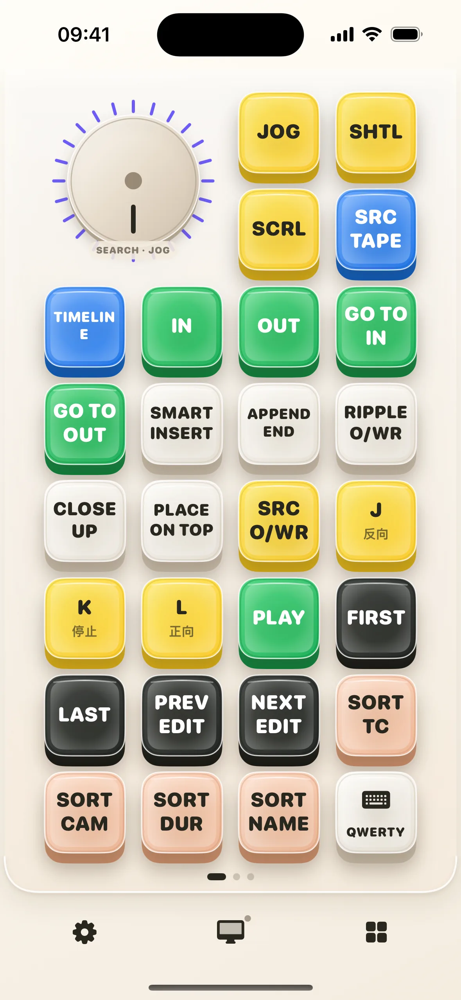
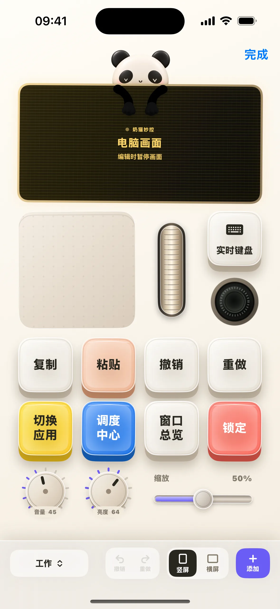
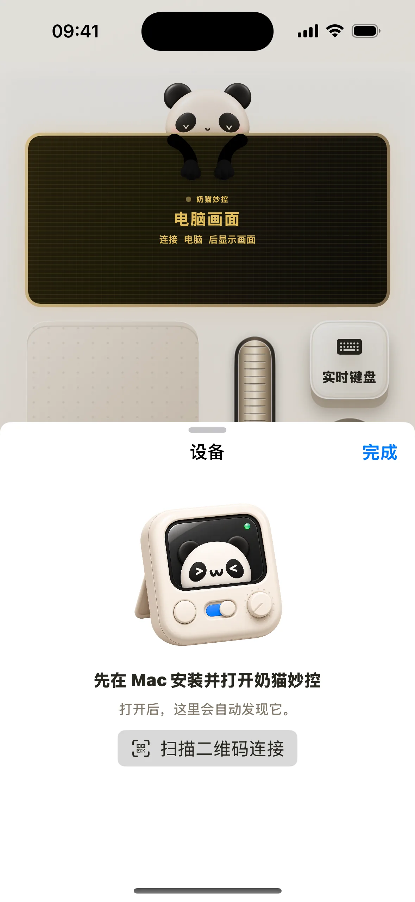
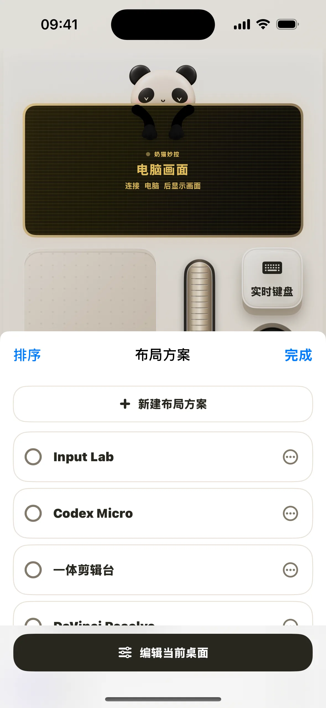
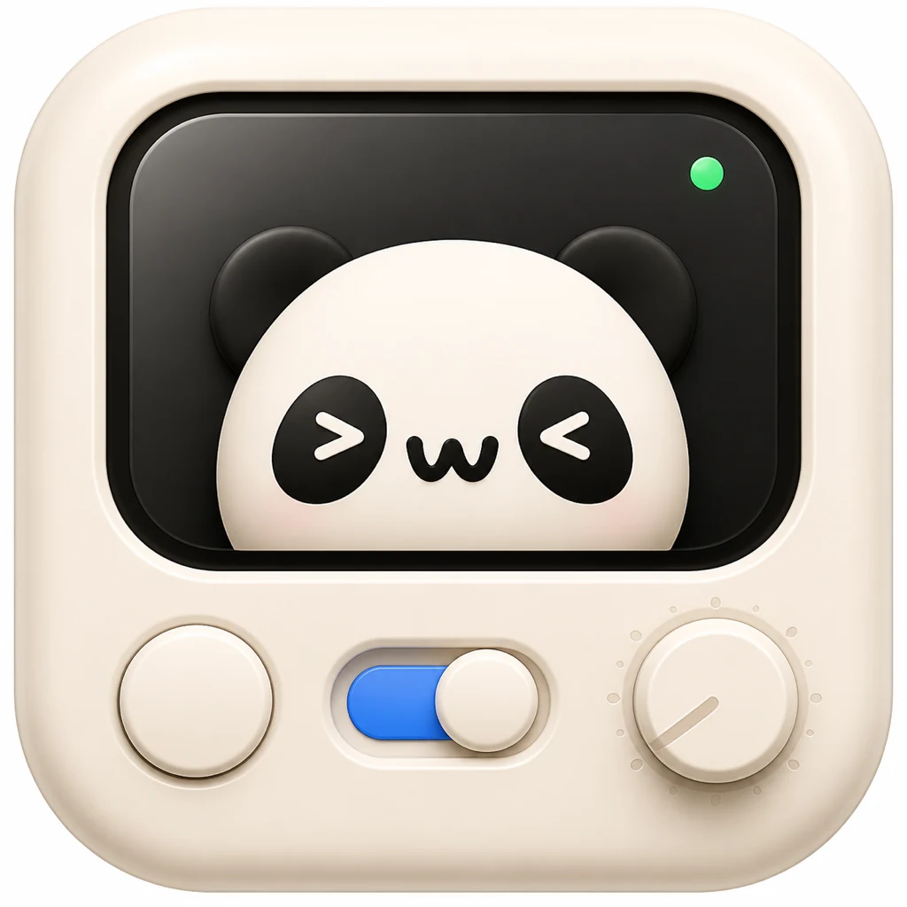

编辑
移动、缩放、改外观




布局
添加组件，再为每个组件选择动作，布局保存在设备上
移动、缩放、改外观
快捷键、媒体、鼠标、Codex 和 Resolve
不同工作使用不同布局
开始使用
打开 DMG，将奶猫妙控拖入“应用程序”
按系统提示授权
两台设备连同一 Wi‑Fi，再扫描菜单栏里的二维码
快捷操作
长按 App 图标选择“扫码配对”，小组件可看连接状态、打开控制台或扫码



本地连接
iPhone 或 iPad 与 Mac 在同一局域网内直接通信，布局和配对信息保存在设备上
隐私说明 →需要，iPhone 或 iPad 与 Mac 通过同一局域网直接通信
在“系统设置 → 隐私与安全性 → 辅助功能”中允许奶猫妙控
屏幕预览需要额外允许“屏幕录制”，普通按键、旋钮和触控板不受影响
长按 App 图标选择“扫码配对”，或点按奶猫妙控小组件
打开“设备”，扫描新 Mac 菜单栏中的二维码
不会，App 不要求账号，控制指令在已配对设备之间传输
支持 macOS 13 及以上，Universal 版本兼容 Apple 芯片和 Intel
macOS 13+ · Apple 芯片和 Intel
下载